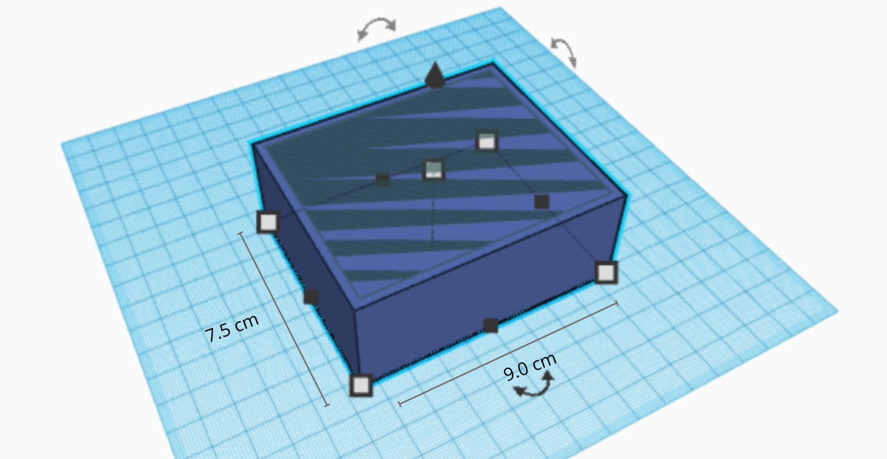

Why Us?
Pricing
We have tried to make our product as reasonable and cost efficient as possible. This is my we use 3D designing technique to make our model. The cost of the entire model ranges from ₹1000 to ₹1200 depending on the size. The customization is done for free and any other personalisations require ₹300 extra.
Why are we doing this?
In India, millions with disabilities face a silent struggle: the inability to communicate basic needs. Awaaz answers this silent plea.
This innovative system empowers individuals through simple gestures. By recognizing hand movements and converting them into spoken messages, Awaaz bridges the gap between their inner world and the world around them.
We envision Awaaz in hospitals, care centers, and homes. Imagine a child saying "I miss Mom" or an elderly person requesting help. Awaaz restores dignity, independence, and a sense of control.
Awaaz is more than technology; it's a step towards a more compassionate India. By breaking down communication barriers, we pave the way for stronger connections, improved healthcare, and a brighter future for all. Join us in building an inclusive India where every voice matters.
SDGs we tackle
Awaaz tackles three key Sustainable Development Goals (SDGs) set by the United Nations. It directly contributes to Good Health and Well-being (SDG 3) by improving communication for people with disabilities, potentially leading to better healthcare access. Furthermore, Awaaz promotes Reduced Inequalities (SDG 10) by empowering these individuals and fostering a more inclusive society. Finally, the development of Awaaz itself exemplifies Partnerships for the Goals (SDG 17), highlighting the importance of collaboration in achieving these global objectives.
Goals for the Future
- Expanded Gesture Recognition: Recognizing more complex gestures for a wider range of expressions.
- Integration with Smart Home Devices: Allowing control of room functions like lights or TV.
- Data Collection:Gathering data on gestures for research or improving the model's accuracy.